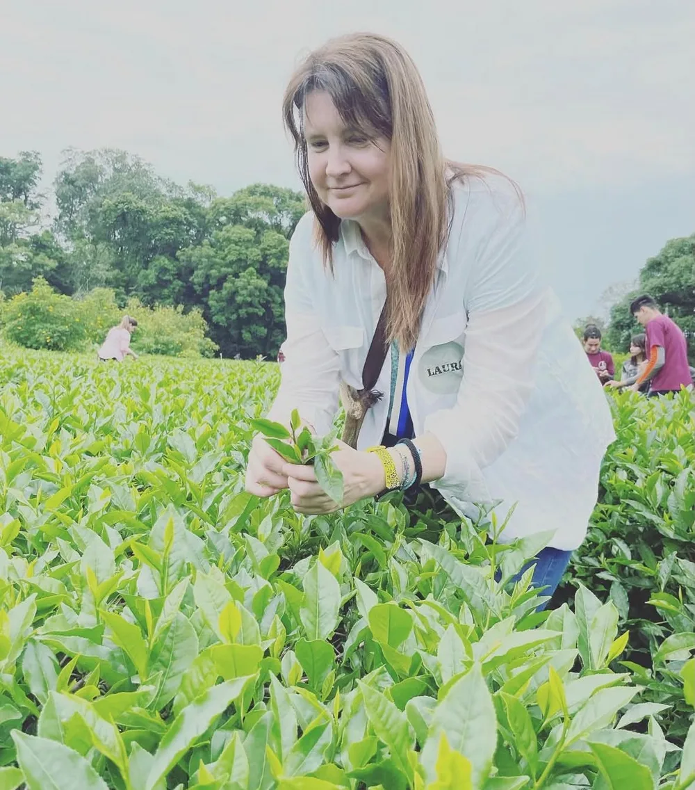

CHARLA Y DEGUSTACIÓN · TÉHistorias, lugares y tés que Laura trajo de su viaje, para descubrir nuevos sabores en una tarde distinta.
Laura volvió hace poco de un gran viaje por China, y propone recorrerlo taza a taza: va a compartir historias, lugares y los tés que trajo de cada rincón.
Un momento para descubrir nuevos sabores, conocer gente y, sobre todo, disfrutar.
No necesitás saber de té: solo traer curiosidad y ganas de pasarla bien.
Las consultas e inscripciones las gestiona directamente Laura.
Consultar por WhatsApp